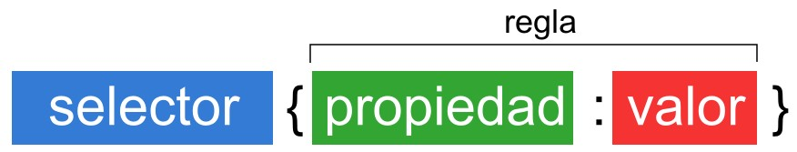
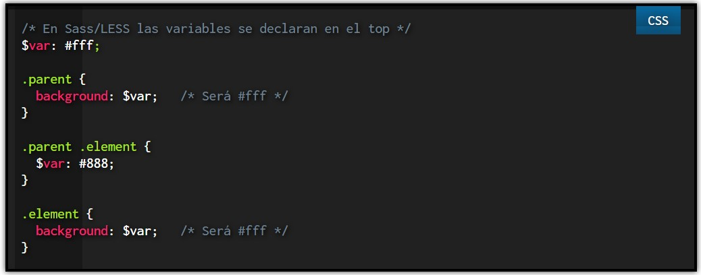
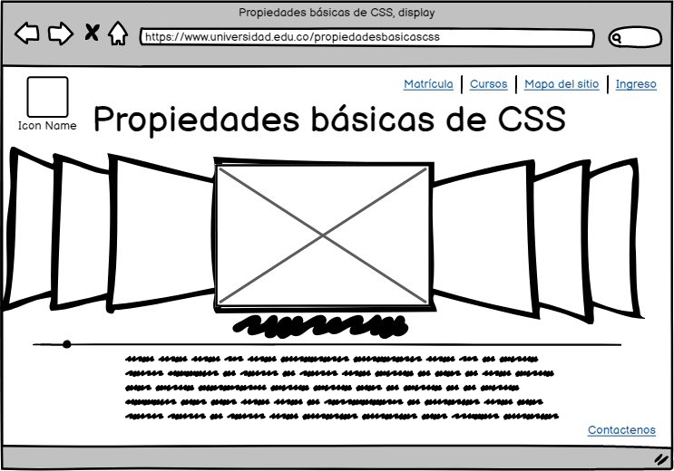

Propiedades básicas de CSS, Display: inline, block, inline-block
Objetivo general
Crear un OVI (Obejto Virtual de Información) desarrollando los
temas que se tratarán en la materia de diseño de sitios web creando una página web
utilizando una herramienta para diseño de sitios web y con GitHub.
Objetivos específicos
- Explicar los diferentes componentes que se utilizan en las propiedad básicas de CSS Display: inline, block, inline-block.
- Organizar la página web explicando de manera básica la temática por medio de una página web utilizando las etiquetas aprendidas
en la web conferencia y en las referencias que se pueden encontrar en la biblioteca virtual.
- Argumentar
Contenido
Las Propiedades básicas de CSS, Display: inline, block, inline-block
Materiales
- Block: Se utiliza para que los elementos se incluyan en bloques
- Inline:Permite que los elementos se renderizen en línea con otros elementos
- Inline-blocktiene un comportamiento combinado entre los dos anteriores y el texto fluye como si fueran elementos en línea
Para la temática explicada se utilizó los siguientes materiales:
- Texto tomado de Campus MVP
- Las hojas de estilo se estructuran como:

- Aquí podremos ver un pequeño ejemplo de CSS:

Maquetación
Aquí se muestra el prototipo de la página principal
